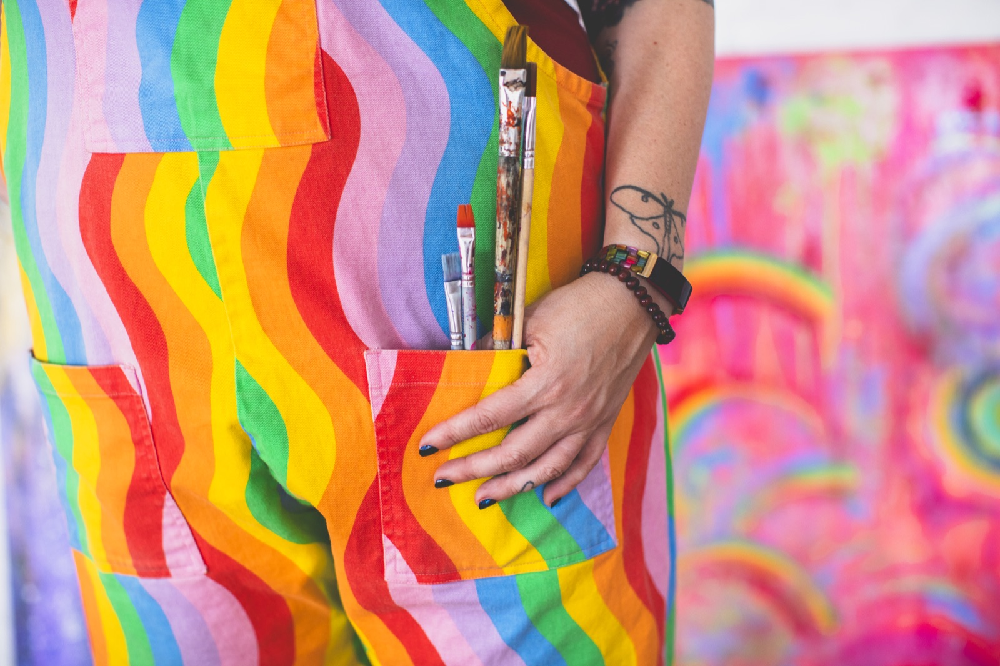

About Bethanie
LPCMH, ATR
Pronouns: She/her/hers

I am a registered art therapist, licensed professional counselor, intuitive artist, and energy healer who believes in the power of creativity to transform, heal, and bring us back to ourselves.
For as long as I can remember, I've been drawn to the intersection of art, emotion, and the unseen. I've explored creativity in my own life, not just as something we make, but as something that moves through us, something that helps us process, reflect, and evolve. Through my work I've seen these truths over and over again:
🎨 Art is a portal. A space where emotions can be seen, where healing can unfold, where self trust can be rebuilt.
🎨 Creativity is a conversation with the self. Not about being "good" at art, but about allowing ourselves to listen, to play, to release.
🎨 Recovery, whatever that means to you, is a creative act. It's a process of becoming, of unlearning and rediscovering, of making meaning where there was once only chaos.

As a sober neurodivergent individual, I have first hand experience navigating a world that often feels overwhelming and challenging, which has shaped my approach as a therapist. My personal journey through self discovery and healing has inspired me to use art and energy work as transformative tools for growth and emotional expression.
Many of the therapeutic modalities I use with clients are the very ones that have helped me thrive. I'm passionate about creating a space where diverse experiences are embraced, allowing individuals to tap into their strengths and explore healing through creativity. My goal is to share the tools that have empowered me, supporting others in their journey toward wellbeing and self acceptance.
Since 2016, I've been offering creative practices to people who are navigating their own journeys, through addiction, trauma, grief, burnout, or simply the experience of being human.
The creative path isn't about achieving. It's about allowing. It's about learning to trust the process, to trust yourself, to create from a place of presence rather than perfection. Through my work, my hope is to guide people back to their own creative knowing. So deeply, so powerfully, so honestly, that self trust becomes second nature.
This is a space for you to explore, to feel, to create without judgment. No right or wrong, no pressure, just a place to return to yourself, again and again. ♡